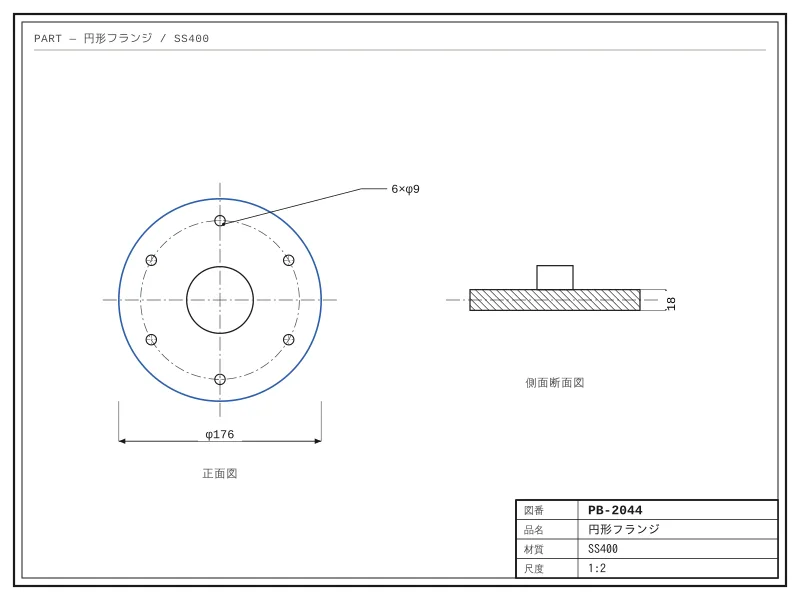
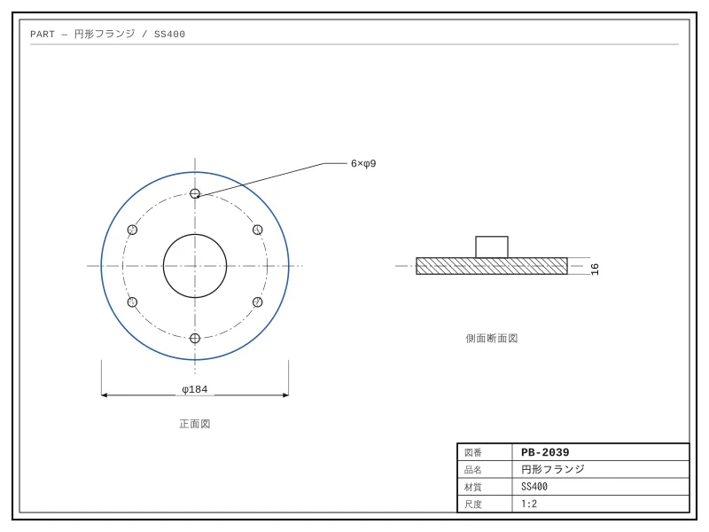
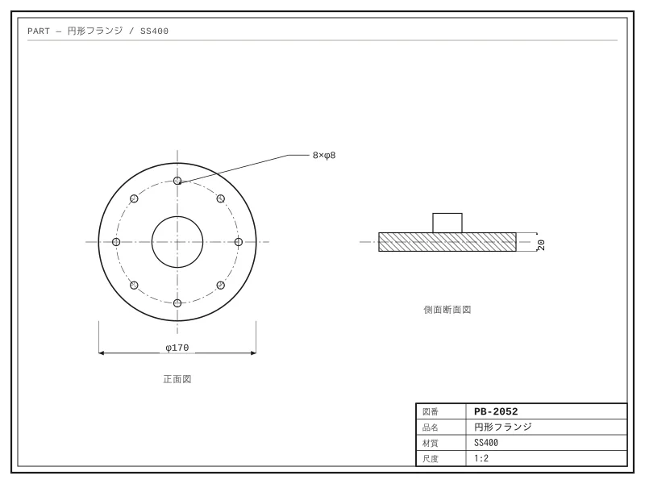
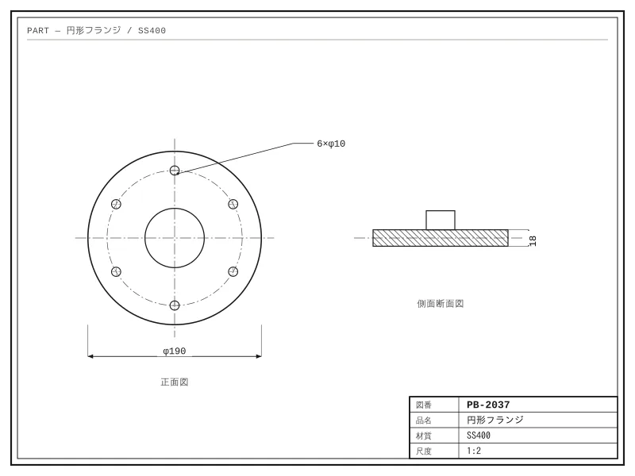
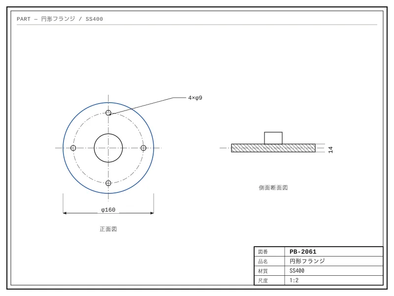
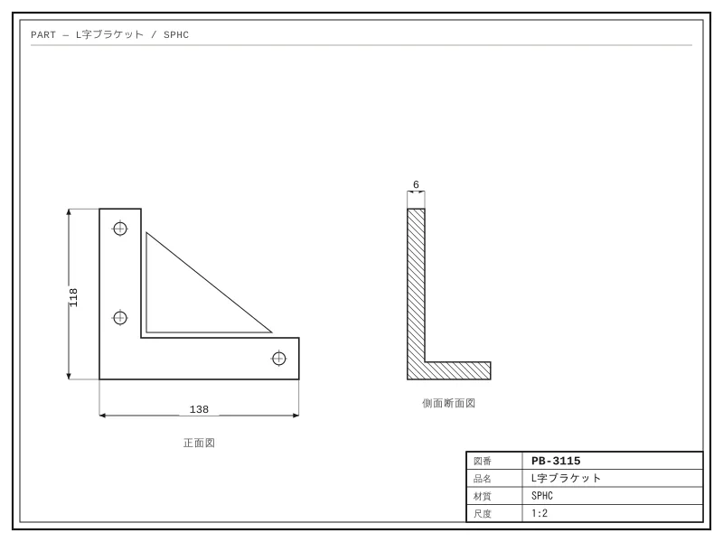
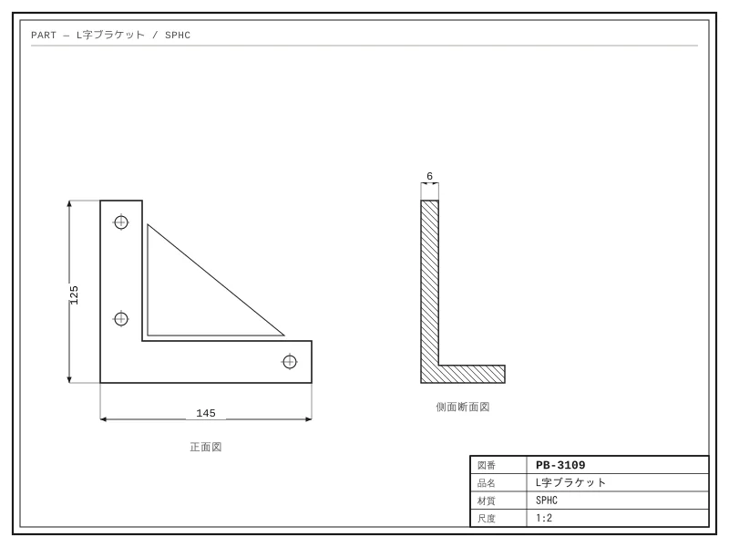
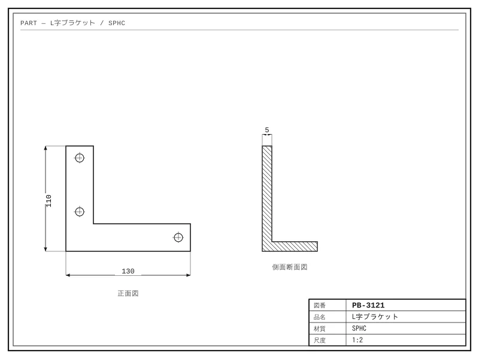
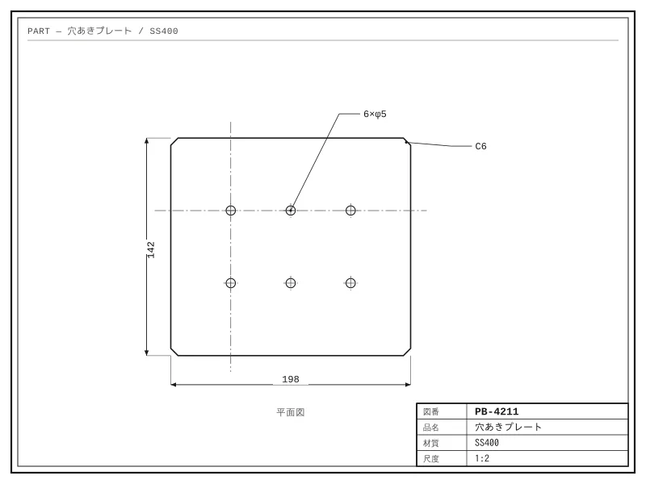

形で、過去の図面を探す。
いま使っているkintoneアプリに後付けするプラグインです。貯まってきた図面PDFが、形で探せる資産に変わります。
先行案内を受け取る品番PB-2041
品名円形フランジ
添付図面.pdf

SCORE 0.000
SCORE 0.000
SCORE 0.000
SCORE 0.000
SCORE 0.000掲載している図面は、すべて検証用に作成したサンプルです。実際のお客様の図面は使用していません。
検索窓に入れる言葉が、ない
品番で検索
該当 0件
形で検索
刃物が入らなかった。薄板が反った。この掴み方だと変形した。
こうした情報は、品番と結びついていません。
形が似た図面にたどり着いて、はじめて出てきます。
図面にたどり着いてからが、本題です
SEARCH
図面から探します。詳細画面のボタンひとつです。
RESULTS

0.968
0.952
0.937形の似た順に並びます。図番も品名も不要です。
RECORD
- 工程
- 加工条件
- 不具合履歴
- 部品構成
図面はレコードに付いています。工程、加工条件、不具合履歴、部品構成へ、そのまま進めます。
kintoneに貯まってきたものが、そのまま資産になる

図面管理システムは、登録という仕事が増えた分だけ、台帳が古くなっていきます。
kintoneでは、日々の流れの中で図面が添付され、副産物として検索対象が貯まります。
いま使っているkintoneアプリに後付けします。図面を移す必要はありません。
手元の図面での検証結果
0枚
検証に使った図面数
0.0%
1位に表示された割合
0.0%
上位10件に含まれた割合
自社で用意した140枚の図面で検証したところ、探していた図面が1位に表示された割合が82.6%、上位10件までに含まれた割合が95.7%でした。図面の内容や枚数によって結果は変わります。
製造業の中から作っています
製造業で15年。海外工場の運営と原価管理をしてきました。
いまも現職で、自社の生産管理システムを自分で作っています。
この製品は、図面の山を探した自分の経験から始まっています。個人で開発し、案内のメールも本人が書きます。
先行案内を受け取る
開発の途中です。お試しいただける段階になったら、お知らせします。
登録しました
案内をお送りするまで、しばらくお待ちください。